Hakan Tarık Akardaş
Mekatronik Mühendisi
Mekatronik mühendisliği, donanım ile yazılımın kusursuz entegrasyonunu hedefleyen çok disiplinli bir mühendislik dalıdır. Temelinde mekanik sistemlerin elektronik donanımlar ve kontrol algoritmaları ile yönetilmesi yatar. Günümüzde otonom sistemler, endüstriyel robotik, sensör füzyonu ve uç bilişim (Edge IoT) gibi ileri teknolojilerin geliştirilmesinde kritik bir rol oynamaktadır.
Temel Çalışma Ve İlgi Alanlarım
Gerçek Zamanlı Kontrol Sistemleri
Otonom araçlar ve robotik platformlar, çevresel değişikliklere anında tepki verebilmek için sıfır toleranslı gecikme sürelerine ihtiyaç duyar. Donanımın hassas yönetimi, ağ gecikmelerinden etkilenmeyen izole iş parçacığı (multi-threading) mimarileri üzerinde çalışan PID ve Pure Pursuit gibi kontrol algoritmaları ile sağlanır.
İleri Kinematik & Uzaysal Yönelim
Hareketli mekanizmaların koordinat dönüşümleri Ters/Düz Kinematik denklemleriyle hesaplanır. 3 boyutlu uzaydaki yönelim problemlerinde, gimbal-lock (kilitlenme) hatalarına yol açan klasik Euler Açıları yerine Quaterniyon (Quaternion) matematiği kullanılarak kesintisiz hedef takibi (tracking) sağlanır.
Veri Füzyonu & Otonom Karar Mekanizmaları
Sensör füzyonu, GPS, IMU ve pusula gibi donanımlardan gelen verilerin Kalman Filtresi ile birleştirilerek hataların ve gürültünün minimize edilmesini sağlar. Bu telemetri altyapısının derin öğrenme (AI) modelleriyle desteklenmesi, otonom sistemlere çevresel farkındalık ve karar alma yeteneği kazandırır.
Sayısal Optimizasyon Algoritmaları
Sistemlerin donanım limitleri dahilinde en verimli şekilde çalışabilmesi için Optimizasyon Algoritmaları uygulanır. Motorların hız profillerinin düzleştirilmesi, otonom yörünge planlaması (path planning) ve sinyal tepe noktalarının (peak detection) tespiti gibi süreçler matematiksel maliyet fonksiyonları kullanılarak optimize edilir.
1. XY Mount Simulator : Çift Eksenli Yönelim ve Takip Sistemi
Bu projede, iki eksenli (X-Y) motor mekanizmalarının donanım kısıtlamalarını sanal ortamda analiz etmek ve hedef takibi senaryolarını modellemek amacıyla oluşturulmuş bir simülasyon çalışmasıdır.
1. Fiziksel Sistem Modellemesi
- Donanım Limitasyonları: Standart bir Pan-Tilt sisteminden farklı çalışan çapraz eksen (X-Y Mount) mekanizmasının yarattığı ölü noktalar ve dönüş sınırları (+/- 90 derece) kısıt (constraint) parametreleri olarak incelenmiştir.
- Sürekli Hedef Takibi: Antenin, hareket sınırının dışına çıkan bir hedefi izlerken kilitlenmemesi (gimbal lock) için uygulanan kaçınma algoritmalarının davranışları gözlemlenmiştir.
2. Kinematik Çözümleme ve Hata Kompanzasyonu
- Az-El to X-Y Dönüşümü: Uzaydaki bir hedefin küresel koordinatlarının (Azimuth ve Elevation) sistemin çapraz tahrik mekanizmasına özel X ve Y motor açılarına dönüştürülme süreci algoritmik olarak ele alınmıştır.
- Zemin ve Tilt Kaçıklığının Hesaplanması: Sistemin monte edildiği platformdaki yapısal eğimlerin (zemin kaçıklığı) ve mekanik eksenler arası tilt hatalarının hedeflemeye olan etkisi incelenmiş ve kompanzasyon yöntemleri uygulanmıştır.
3. 3D Görselleştirme ve Python Entegrasyonu
- Dinamik 3D Simülasyon: Yönelim hareketleri, uzaydaki hedefin yörüngesi ve antenin anlık yöneldiği doğrultu (Boresight Vector) Matplotlib (FuncAnimation) ile görselleştirilmiştir.
- Motor Davranış Analizi: Hedefe kilitlenme esnasındaki hareket geçişleri ve donanıma binen yük değişimleri Python (SciPy/NumPy) kütüphaneleri kullanılarak simüle edilmiştir.
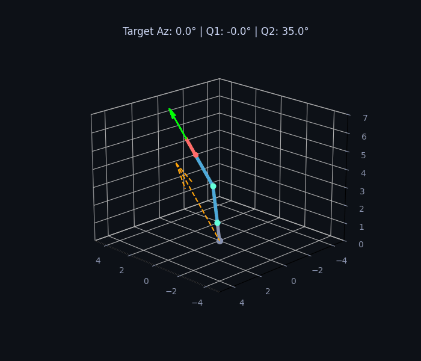
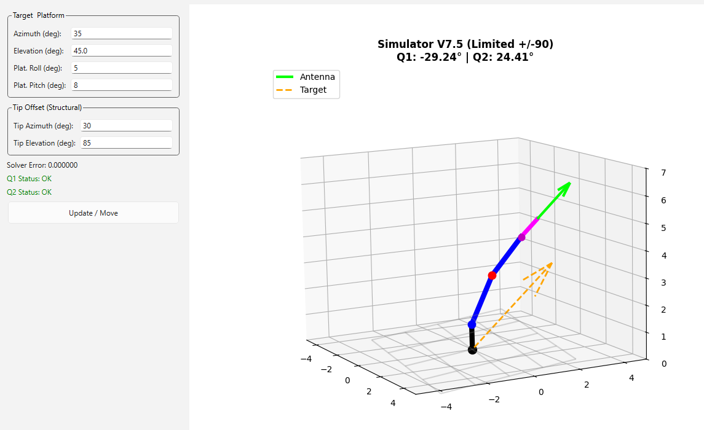
* Simülatör V7.5 Arayüzü ve Kısıtlanmış Doğrulama (Verification) Grafiği.
2. Sinyal Arama Algoritması
Doğrusal (linear) motor hızını sabit tutmak amacıyla konum yarıçapına bağlı açısal hız (dtheta) değişimlerini inceleyen ters spiral algoritma çalışması. Sinyal gücüne (RSSI) bağlı olarak daralan arama yörüngesi ve U-dönüşü karar mekanizmaları Matplotlib (FuncAnimation) ile görselleştirilmiştir.
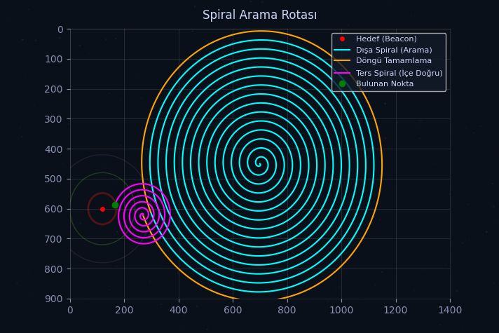
* Sinyal seviyesini (RSSI) baz alarak hedefe yaklaştıkça daralan ve akıllı U-dönüşleriyle hedefe kilitlenen Spiral arama yapısının harita rotası.
3. 3D Patern Extractor & Gerçek Zamanlı Uydu Sinyal Analizi
Bu çalışma, Alphasat uydusuna yönlendirilen bir anten sisteminin TCP üzerinden spektrum analizörüne bağlanarak, alınan gerçek dünya sinyal verilerinden 3 boyutlu paterni oluşturulması üzerinedir (core4.py kod yapısı baz alınmıştır).
1. Cihaz Haberleşmesi ve Uydu Takibi
- Siglent Spektrum Analizör Entegrasyonu: Ölçüm donanımıyla TCP Bağlantısı (Socket) üzerinden iletişim kurularak, Alphasat Beacon frekansına ait spektrum parametreleri ve anlık sinyal şiddeti (RSSI) verileri canlı olarak toplanmıştır.
- Asenkron Sensör/Motor Senkronizasyonu: Motor sürücülerinden alınan yönelim açıları ile TCP üzerinden akan sinyal verileri, zaman damgaları kullanılarak iş parçacıkları arasında eşleştirilmiştir.
2. Patern İnşası ve Sinyal Analizi
- 3D ve Polar Görselleştirme: Tarama alanından elde edilen ham veriler Python ile işlenerek; antenin hüzme yapısını gösteren ısı haritaları, 3D Paternleri ve Kutupsal (Polar) grafikler oluşturulmuştur.
- Tepe Noktası (Peak) Karakterizasyonu: Elde edilen topografik veri seti üzerinde analizler yapılarak, tepe (peak) sinyallerin uzaydaki dağılımı (Beamwidth) incelenmiştir.
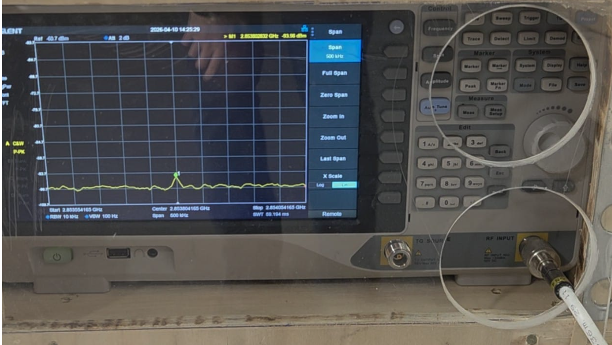
TCP Bağlantısı ile Siglent Spektrum Analizöründen Okunan Gerçek Zamanlı Alphasat Beacon Sinyali (2.85 GHz)
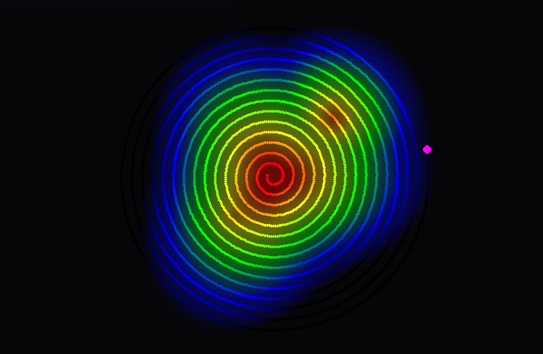
2D Spiral Isı Haritası (Sinyal Gücü Dağılımı)
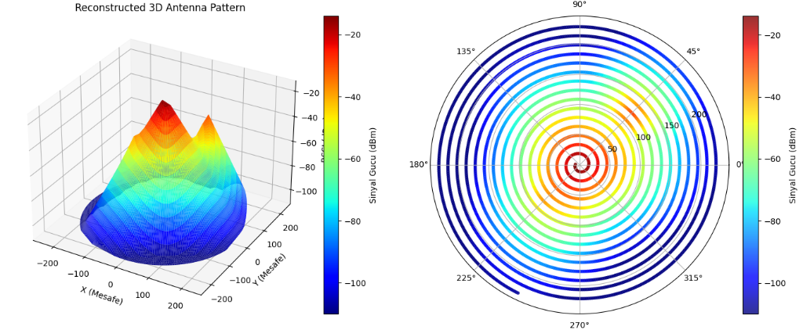
Yeniden Yapılandırılmış 3D ve Polar (Kutupsal) Patern
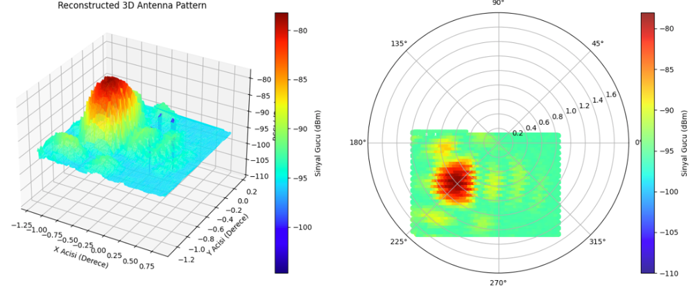
Gerçek Ölçüm Sonucu: Kare (Raster) Tarama Analizi
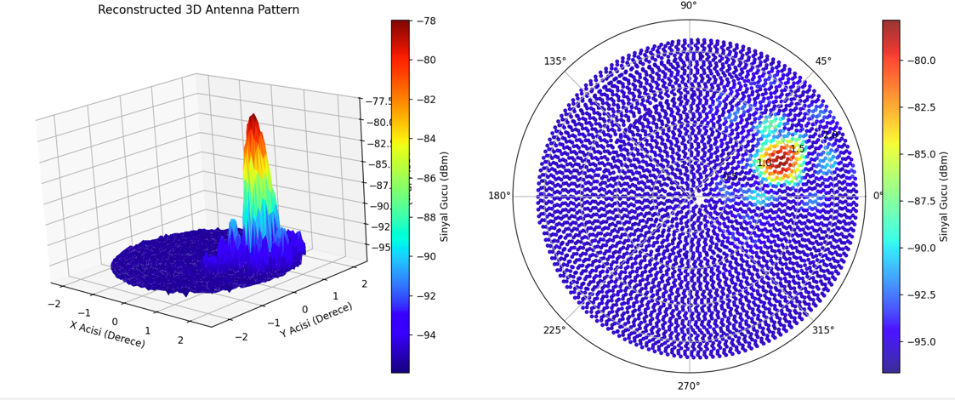
Gerçek Ölçüm Sonucu: Spiral Tarama Analizi
4. Otonom Deniz Aracı: Çok Katmanlı Navigasyon ve Engel Algılama Sistemi
Bu çalışma; navigasyon, kontrol algoritmaları ve görüntü işleme süreçlerinin bir araya getirildiği otonom bir deniz aracı test platformudur. Sensör verilerinin donanım seviyesinde işlenmesinden, web tabanlı arayüz üzerinden izlenmesine kadar olan veri akışı incelenmiştir.
1. Konumlandırma ve Veri İşleme
- GPS & PPS Entegrasyonu: Konum verilerindeki zamanlama sapmalarını gözlemlemek için GPS modülünden gelen PPS (Pulse Per Second) sinyali ve Linux Chrony servisi (Kernel Time Synchronization) kullanılarak zaman damgalama (timestamping) testleri yapılmıştır.
- Sensör Füzyonu (IMU & Pusula): Aracın yönelim (orientation) verileri IMU ve manyetik pusula sensörlerinden alınmıştır.
- Kalman Filtresi: Sensörlerden gelen gürültülü veriler Kalman Filtresi işleminden geçirilerek aracın konum ve rota tahmini üzerindeki etkileri incelenmiştir.
2. Rehberlik ve Kontrol Stratejileri
- Pure Pursuit Algoritması: Atanan rotaların (path) takip edilmesi amacıyla geometrik takip yöntemi uygulanmıştır.
- PID Kontrol & Servo Yönetimi: Rota sapmalarını gözlemlemek amacıyla kurulan PID döngüsü ile dümen sisteminin tepkileri analiz edilmiştir.
3. Görüntü İşleme: Buoy & Ship Detector
- Nesne Algılama: Kamera yayını üzerinden denizdeki dubaların (buoy) ve diğer gemilerin tespit edilebilirliği test edilmiştir.
- Dinamik Engel Sakınma: Algılanan nesne koordinatlarının navigasyon algoritmasına geri besleme olarak gönderilmesi üzerinde çalışılmıştır.
4. Web Tabanlı İzleme
- Arayüz Tasarımı: Harita üzerinden rota belirleme ve sensör verilerini grafiklerle izleme süreçleri için bir dashboard arayüzü hazırlanmıştır.
- Web Socket Haberleşmesi: Sunucu ve araç arasındaki çift yönlü telemetri trafiği Web Socket protokolü ile gerçekleştirilmiştir.
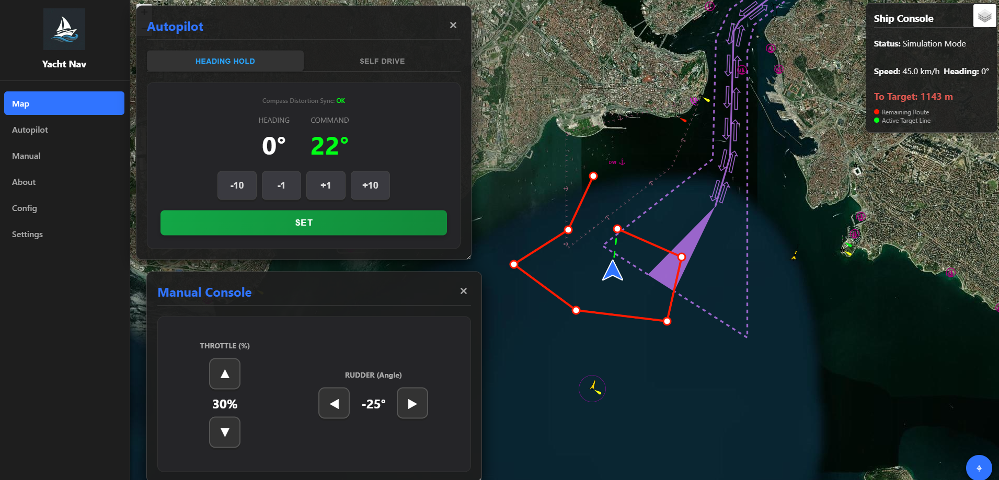
Web Tabanlı Harita, Otopilot ve Kontrol Paneli
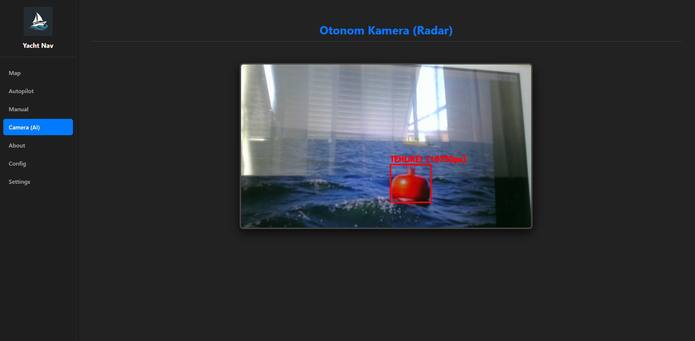
Yapay Zeka (AI) Tabanlı Deniz Üzeri Tehlike Tespiti
5. Raspberry Pi ve ThingSpeak ile Bulut Tabanlı IoT Ev Otomasyonu
Bu projede, fiziksel ortam sensör verilerinin ve aktüatör (ör. aydınlatma) durumlarının internet üzerinden uzaktan izlenmesi ve kontrol edilmesi amacıyla Raspberry Pi ve ThingSpeak IoT Cloud entegrasyonu gerçekleştirilmiştir.
1. ThingSpeak IoT Platformu Entegrasyonu
- Bulut Veri Kaydı (Data Logging): Raspberry Pi üzerinde çalışan Python servisleri, periyodik olarak okunan ortam sensörü verilerini HTTP istekleri (REST API) aracılığıyla ThingSpeak kanallarına iletir.
- Canlı İzleme (Dashboard): ThingSpeak üzerinde oluşturulan web panelleri sayesinde, sensör verilerinin zaman içerisindeki trendleri (grafikler halinde) ve cihazların anlık çalışma durumları uzaktan izlenebilir.
2. Uzaktan Kontrol ve Geri Besleme (Feedback)
- Donanım Kontrolü: Yalnızca tek yönlü veri akışı değil, aynı zamanda bulut üzerinden gönderilen komutlarla evdeki ışıkların (röle modülleri üzerinden) uzaktan açılıp kapatılması sağlanmıştır.
- Durum Teyidi: Bir kontrol komutu uygulandığında, Raspberry Pi donanımsal değişikliği gerçekleştirir ve ışığın güncel durumunu (Açık/Kapalı) teyit etmek için buluta bir geri besleme sinyali yollar. Bu yapı komut kayıplarını engeller.
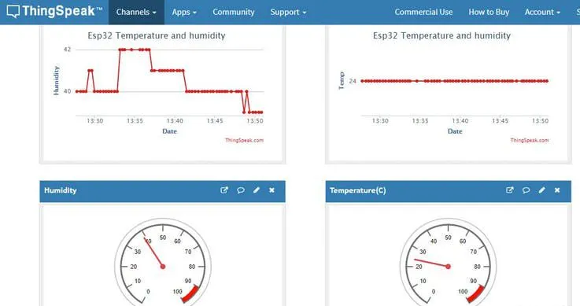
ThingSpeak Dashboard: Sensör Verilerinin Canlı İzlenmesi ve Grafiksel Analizi
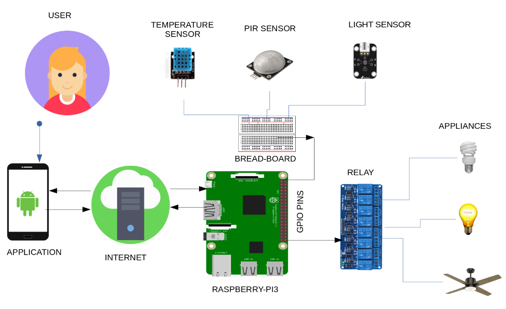
Raspberry Pi Üzerinden Gerçekleştirilen Aktüatör Yönetimi (Röle Durumları)
6. GPS Çalışma Mantığı ve PPS ile Zaman Senkronizasyonu
Küresel Konumlama Sistemi (GPS), uydulardan gelen sinyallerin varış sürelerindeki farkı hesaplayarak (Trilaterasyon) konum tespiti yapan bir navigasyon teknolojisidir. Bu sistemin kalbinde mikrosaniye seviyesinde hassasiyet sunan zamanlama altyapısı bulunur.
1. Trilaterasyon ve Mesafe Hesabı
- Çalışma Prensibi: GPS alıcısı, en az 4 farklı uydudan gelen sinyallerin (ışık hızında yayılan) seyahat sürelerini (Time of Flight - ToF) ölçer. Mesafe = Hız × Zaman formülü ile uydulara olan uzaklıklar belirlenir.
- Uzaysal Kesişim: Uyduların merkezde olduğu sanal kürelerin kesişim noktası, alıcının Dünya üzerindeki 3 boyutlu konumunu (Enlem, Boylam, İrtifa) verir. Dördüncü uydu, alıcının kendi iç saatindeki sapmayı (Clock Bias) düzeltmek için kullanılır.
2. PPS (Pulse Per Second) Nedir?
- Hassas Zamanlama Sinyali: Standart NMEA veri paketleri (UART üzerinden gelen seri veriler) sistemdeki baud rate ve işlemci yüküne bağlı olarak gecikmeler yaşayabilir. Bu gecikmeyi aşmak için donanımsal bir PPS pini kullanılır.
- Kare Dalga İşareti: GPS modülü, her saniyenin tam başlangıcında çok keskin bir kare dalga üretir. Bu dalganın yükselen kenarı (rising edge) tam olarak yeni bir saniyenin ilk anını nano-saniye hassasiyetinde temsil eder.
3. Kernel Time Synchronization (Chrony/NTP)
- Interrupt (Kesme) Yönetimi: İşletim sistemlerinde (ör. Linux), PPS pini bir donanım kesmesine (interrupt) bağlanır. Sinyal geldiğinde işlemci anında diğer işleri durdurarak kernel saatini (system clock) düzeltir.
- Zaman Entegrasyonu: Chrony gibi servisler, NMEA verilerinden kaba zaman bilgisini (tarih/saat) alırken, saniyenin tam hizalamasını PPS sinyalinden okuyarak sistemin Stratum-1 seviyesinde hassas bir zaman sunucusuna dönüşmesini sağlar.
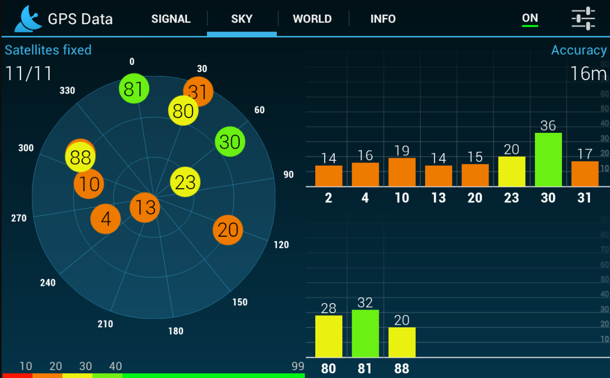
GPS Alıcısı Tarafından Algılanan Uydular ve Sinyal Güçleri (SNR)
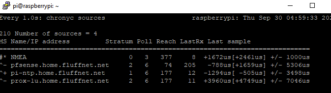
Linux Chrony Servisi Üzerinden Gerçekleştirilen NTP Zaman Senkronizasyon Durumu
7. 3D Yüzey Tasarımı (Surface Design)
Rhino 7 kullanılarak modellenmiş "Hull Top" yüzey tasarımı (Surface Design). Gelişmiş CAD araçları ve endüstriyel tasarıma yönelik yüzey modelleme teknikleri kullanılarak oluşturulmuştur.
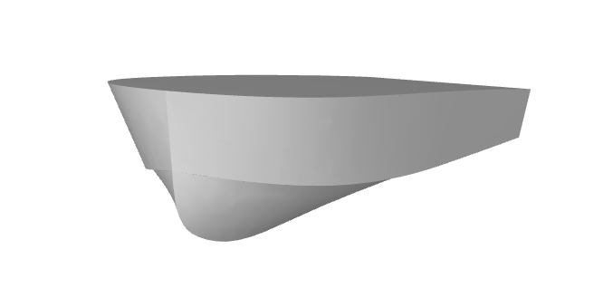
* Büyütmek için görsele tıklayın. Rhino 7 ortamında gerçekleştirilen gövde üst yapısı (hull) çalışması.
İletişim Ağı
Projeler ve iş birlikleri için aşağıdaki kanallardan bana ulaşabilirsiniz.